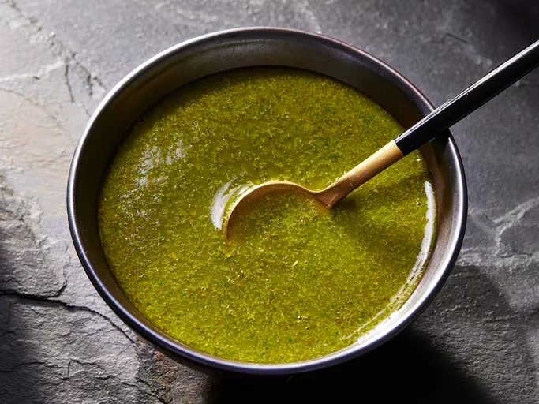

Chimichurri souce
Home

Description
An Italian classic, this no-mayo salad is packed with big flavors from a garlic-parsley dressing.
Home cooks love adapting the recipe with other ingredients such as fresh basil and boiled eggs.
Ingredients
- 1 cup fresh parsley
- ¾ cup extra virgin olive oil
- 3 tablespoons red wine vinegar
- 2 tablespoons dried oregano
- 2 teaspoons ground cumin
- 1 ½ teaspoons minced garlic
- 1 ½ teaspoons pepper sauce (such as Frank's Red Hot®)
- 1 teaspoon salt
Steps
- Gather all ingredients.
- Combine parsley, oil, vinegar, oregano, cumin, garlic, hot sauce, and salt in a blender or food processor.
- Mix on medium speed until ingredients are evenly blended, about 10 seconds.
- Enjoy!